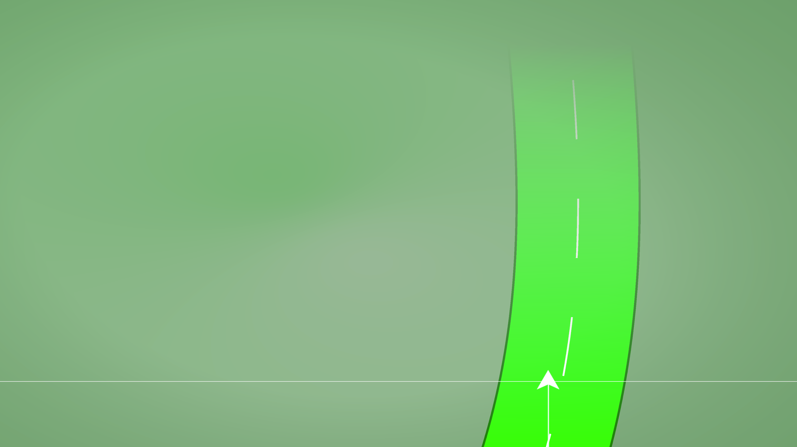
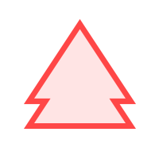
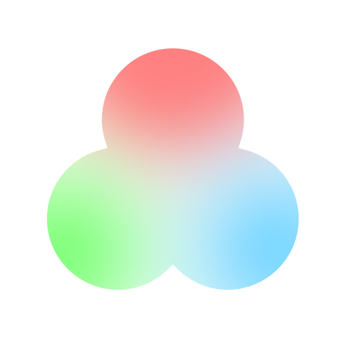
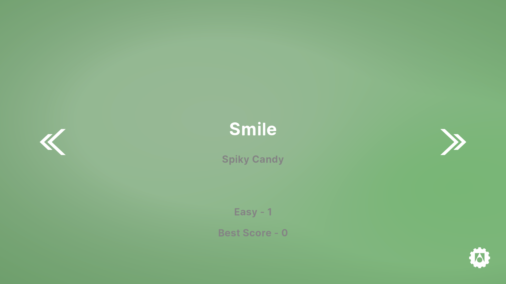
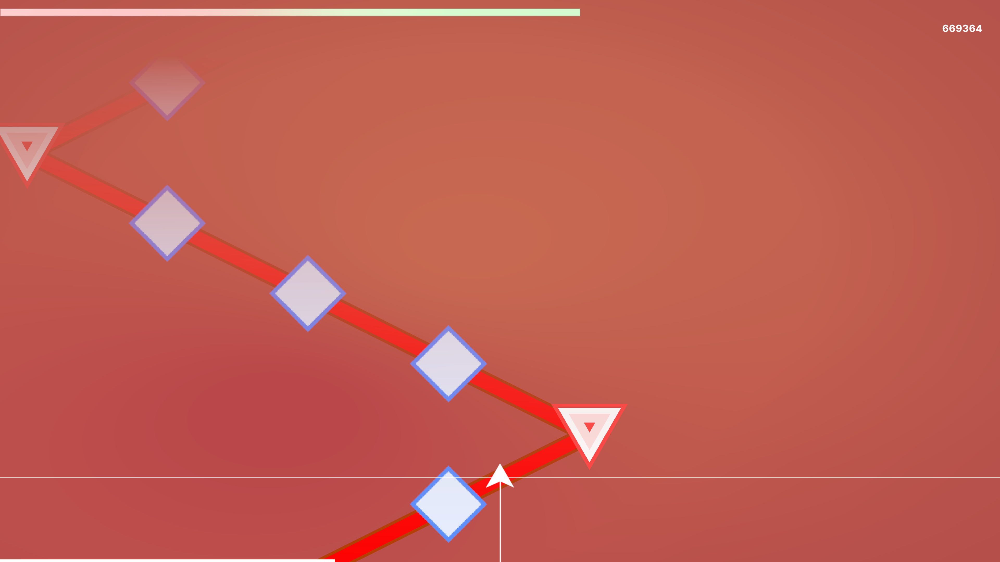
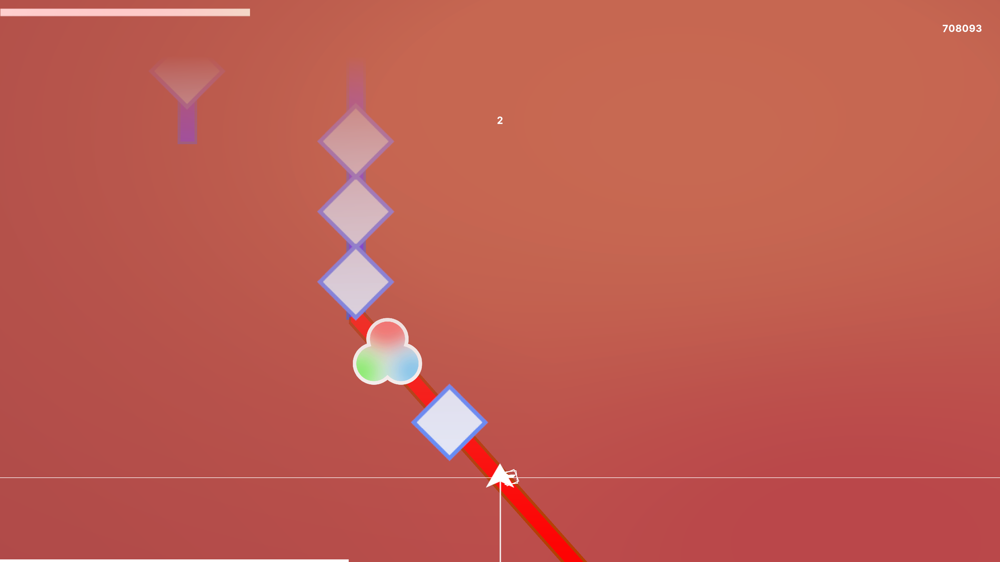

게임 플레이 영상.
게임 시스템 소개.
Region
배경의 색상을 의미하는 Region에는 총 세 가지 종류인 Red, Green, Blue가 존재합니다
Line
Line도 역시 세 가지 종류가 존재합니다

- Red 라인은 Red Region에서만 등장합니다
- Red 라인은 직선적이지만, 도중에 급격하게 방향을 꺽을 수 있습니다
- 그러나 Tracker는 언제나 Line을 따라가니 안심하셔도 좋습니다

- Green 라인은 Green Region에서만 등장합니다
- Green 라인은 언제나 우아한 부드러운 곡선을 그립니다
- Tracker가 Green Line 범위 밖에 있으면 Note 처리가 불가능합니다
- 그러니 Tracker를 방향키로 조작하여 최대한 Line 위에 있도록 해야만 한다는 점을 잊지마세요

- Blue 라인은 Blue Region에서만 등장합니다
- Blue 라인은 직선적이며, 동시에 여러 Line이 등장할 수 있습니다
- Tracker는 방향키를 통해 Line과 Line 사이를 자유롭게 뛰어다닐 수 있습니다
Note
Note는 총 다섯 가지의 종류가 존재하며, 각각 Hit 방법이 조금씩 달라집니다

- 가장 간단한 Note인 Single Click Note는 방향키를 제외한 아무 키를 누르면 Hit할 수 있습니다

- Double Clock Note는 방향키를 제외한 아무런 같은 키를 연타하면 Hit할 수 있습니다

- Long Note는 방향키를 제외한 아무 키를 누르고 길게 유지하면 연속적으로 Hit할 수 있습니다

- Red Line Corner Note는 Red Line의 꺾이는 지점에서만 등장합니다
- Red Line이 왼쪽에서 오른쪽으로 향한다면 오른쪽 방향키를 누르면 Hit할 수 있습니다
- Red Line이 오른쪽에서 왼쪽으로 향한다면 왼쪽 방향키를 누르면 Hit할 수 있습니다

- Region의 색상이 변하는 지점에만 등장하는 Note입니다
- 취급은 Single Click Note와 같습니다
게임 스크린샷.




